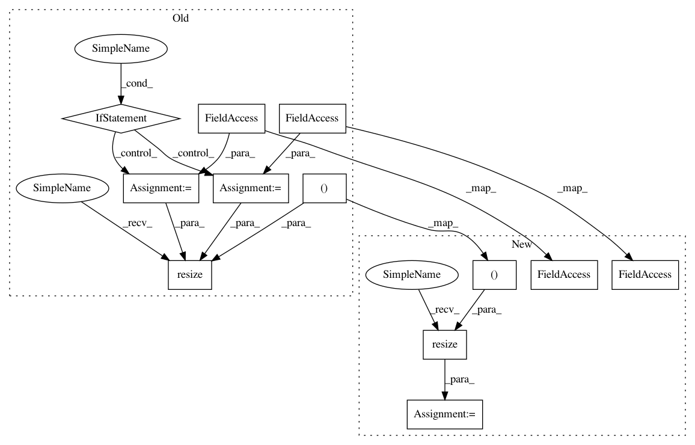

b49c352e8f06667d42ffed5b630b890fd1c03184,lib/vgg_face.py,VGGFace,resize_face,#VGGFace#Any#,70
Before Change
def resize_face(self, face):
Resize incoming face to model_input_size
if face.shape[0] < self.input_size:
interpolation = cv2.INTER_CUBIC // pylint:disable=no-member
else:
interpolation = cv2.INTER_AREA // pylint:disable=no-member
face = cv2.resize(face, // pylint:disable=no-member
dsize=(self.input_size, self.input_size),
interpolation=interpolation)
return face
@staticmethod
def find_cosine_similiarity(source_face, test_face):
After Change
def resize_face(self, face):
Resize incoming face to model_input_size
sizes = (self.input_size, self.input_size)
interpolation = cv2.INTER_CUBIC if face.shape[0] < self.input_size else cv2.INTER_AREA
face = cv2.resize(face, dsize=sizes, interpolation=interpolation)
return face
@staticmethod
def find_cosine_similiarity(source_face, test_face):
In pattern: SUPERPATTERN
Frequency: 3
Non-data size: 12
Instances
Project Name: deepfakes/faceswap
Commit Name: b49c352e8f06667d42ffed5b630b890fd1c03184
Time: 2019-11-13
Author: vrooman.kyle@gmail.com
File Name: lib/vgg_face.py
Class Name: VGGFace
Method Name: resize_face
Project Name: deepfakes/faceswap
Commit Name: b49c352e8f06667d42ffed5b630b890fd1c03184
Time: 2019-11-13
Author: vrooman.kyle@gmail.com
File Name: plugins/extract/align/cv2_dnn.py
Class Name: Align
Method Name: align_image
Project Name: deepfakes/faceswap
Commit Name: b49c352e8f06667d42ffed5b630b890fd1c03184
Time: 2019-11-13
Author: vrooman.kyle@gmail.com
File Name: lib/vgg_face2_keras.py
Class Name: VGGFace2
Method Name: resize_face